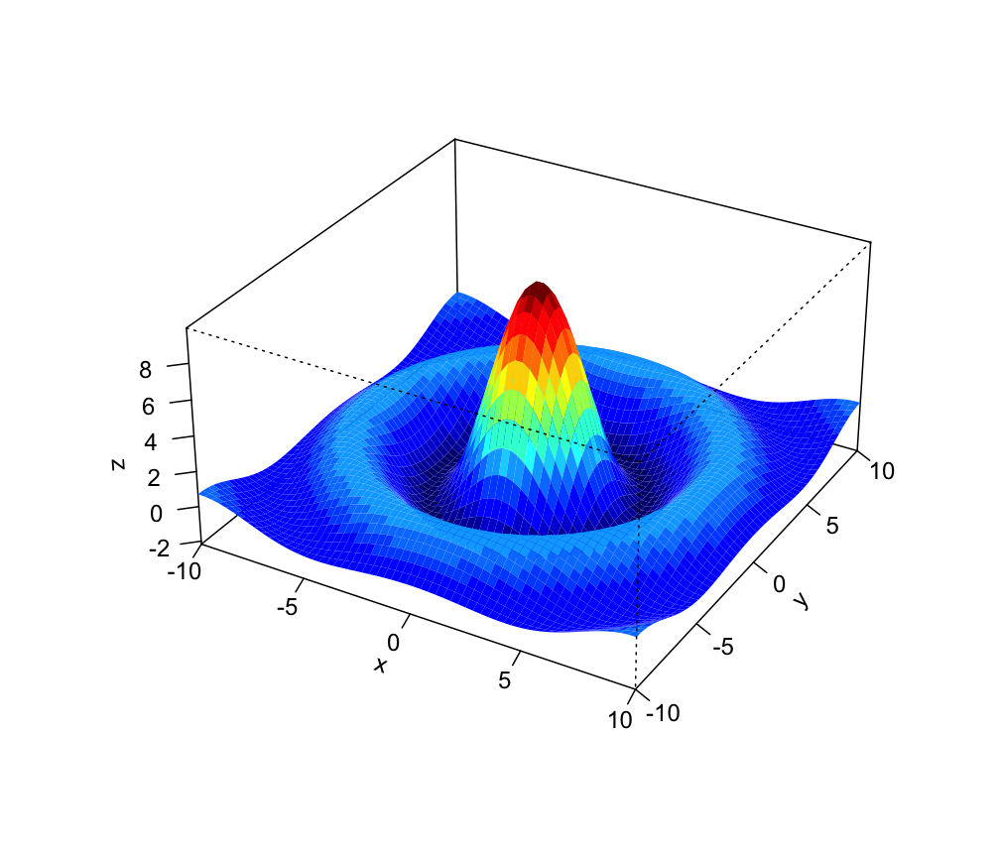
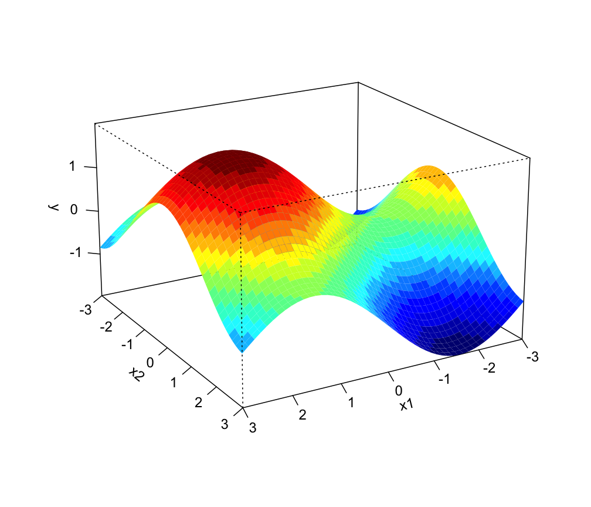
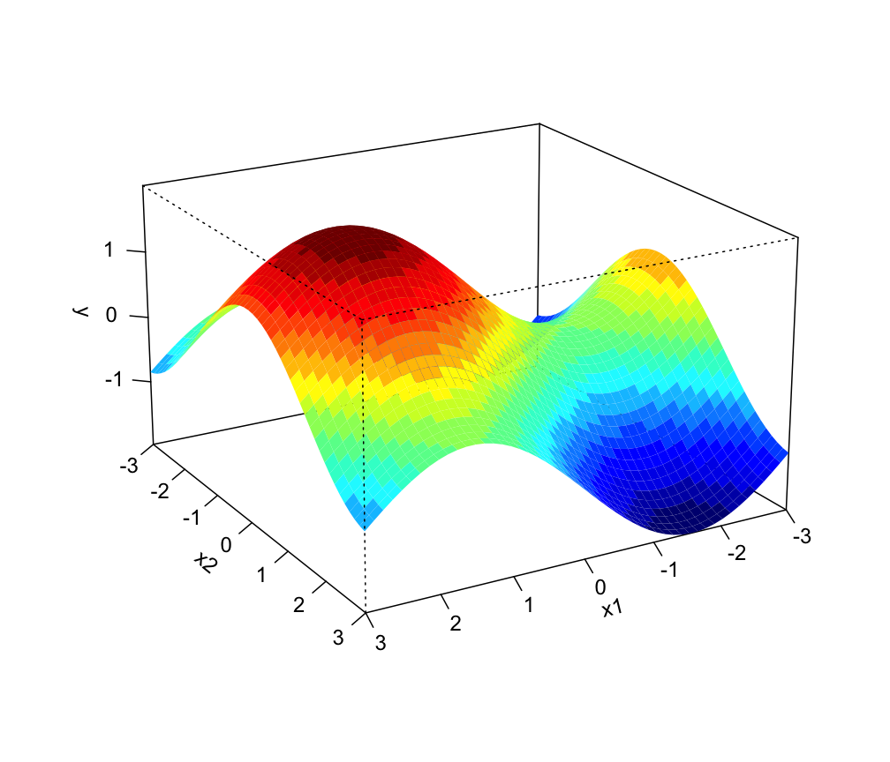

Perspective plot with colour levels
persp3D.RdThis function draws a perspective plot of a surface with different levels in different colours.
persp3D(x, y, z, theta = 30, phi = 20, d = 5, expand = 2/3,
xlim = range(x, finite = TRUE), ylim = range(y, finite = TRUE),
zlim = range(z, finite = TRUE), levels = pretty(zlim, nlevels),
nlevels = 20, col.palette = jet.colors, border = NA,
ticktype = "detailed", xlab = NULL, ylab = NULL, zlab = NULL,
...)Arguments
- x, y
locations of grid lines at which the values in
zare measured. These must be in ascending order. By default, equally spaced values from 0 to 1 are used. Ifxis a list, its componentsx$xandx$yare used forxandy, respectively.- z
a matrix containing the values to be plotted (NAs are allowed).
- theta, phi
angles defining the viewing direction.
thetagives the azimuthal direction andphithe colatitude.- d
a value which can be used to vary the strength of the perspective transformation.
- expand
a expansion factor applied to the
zcoordinates.- xlim, ylim, zlim
x-, y- and z-limits for the axes.
- levels
a vector of values specifying the levels to be used for plotting the surface with different colours.
- nlevels
a value specifying the number of levels to be used for plotting. This value is used if
levelsargument is not specified.- col.palette
the colour palette used for plotting.
- border
the colour of the line drawn around the surface facets. By default is set to
NAso no borders are drawn.- ticktype
a character specifying the type of axes tickmarks. By default
"detailed"ticks are drawn.- xlab, ylab, zlab
character strings specifying the titles for the axes.
- ...
Further arguments passed to the function
persp.
Details
This function enhances the default perspective plot for drawing 3-dimensional surfaces.
Value
Return a list with the following elements:
- persp
the viewing transformation matrix (see
persp);- levels
a vector of values giving the levels used for plotting the surface;
- colors
a vector of strings giving the colour used for plotting the surface.
See also
Examples
y <- x <- seq(-10, 10, length=60)
f <- function(x,y) { r <- sqrt(x^2+y^2); 10 * sin(r)/r }
z <- outer(x, y, f)
persp3D(x, y, z, theta = 30, phi = 30, expand = 0.5)

persp3D(x, y, z, col.palette = heat.colors, phi = 30, theta = 225,
box = TRUE, border = NA, shade = .4)
 x1 <- seq(-3,3,length=50)
x2 <- seq(-3,3,length=50)
y <- function(x1, x2) sin(x1)+cos(x2)
persp3D(x1, x2, outer(x1,x2,y), zlab="y", theta = 150, phi = 20, expand = 0.6)

x1 <- seq(-3,3,length=50)
x2 <- seq(-3,3,length=50)
y <- function(x1, x2) sin(x1)+cos(x2)
persp3D(x1, x2, outer(x1,x2,y), zlab="y", theta = 150, phi = 20, expand = 0.6)
